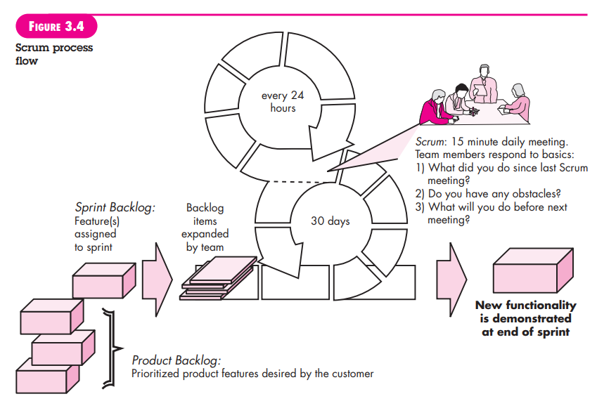

SCRUM
1. Nama scrum bukan lah suatu singkatan melainkan diambil dari sebuah aktivitas dalam permainan rugby.
2. Scrum adalah salah satu metode software development yang bersifat AGILE.
3. Scrum pertama kali dicetuskan oleh Jeff Sutherland dan tim developernya pada awal tahun 1990 dan di kembangkan lebih jauh oleh Schwaber dan Beedle.
4. Prinsip-prinsip pada scrum digunakan sebagai penuntun aktivitas pengembangan yang dalam prosesnya memperhatikan aktivitas framework: requirements, analysis, design, evolution, dan delivery.
5. Dalam sebuah aktivitas framework, pekerjaan yang berlangsung pada sebuah pola proses disebut dengan sprint.
6. Banyaknya sprint yang dibutuhkan tergantung kepada kompleksitas produk dan besarnya projek yang dikerjakan.
7. Pekerjaan yang dikerjakan pada setiam sprint diadaptasi sesuai dengan masalah ang dihadapi dan sering dimodifikasi saat itu juga oleh tim scrum.
8. Proses scrum bisa dilihat disini:

9. Scrum menekankan kegunaan dari kumpulan pola proses software yang telah terbukti efektif digunakan dalam projek dengan waktu pengerjaan singkat, kebutuhan labil, dan bisnis kritis. Setiap pola tersebut di definisikan dalam kumpulan aksi pengmbangan.
10. Adapula backlog merupakan suatu list kebutuhan projekatau fitur-fitur yang di prioritaskan dan memberikan nilai bisnis bagi pelanggan.
11. Item bisa ditambahkan kapan pun.
12. Manager projeklah yang menentukan backlog dan update yang dibutuhkan.
13. Ada juga time-box yang merupakan istilah manajemen projek yang berarti durasi yang dialokasikan untuk mengerjakan suatu pekerjaan.
14. Changes atau item pekerjaan pada backlog tidak di pelihatkan ketika sprint berlangsung, sehingga sprint membiarkan anggota tim untuk bekerja singkat dan stabil.
15. Dan ada yang disebut scrum meeting, sebuah meeting rutin harian (biasanya sekitar 15 menit) untuk membahas 3 hal: apa yang telah dikerjakan sejak meeting sebelumnya, masalah apasaja yang ditemui, danapa yang akan dikerjakan hingga meeting selanjutnya.
16. Yang terakhir adalah demos, merupakan proses dimana funsi atau fitur yang telah dibuat akan doiperlihatkan pada customer dengan fitur yang diperlihatkan adalah fitur yang dikerjakan dalam timebox yang telah direncanakan.
17. Beedle dan klega nya mengatakan bahwa Scrum mengasumsikan kehadiran kekacauan di masa mendatang sehingga pola proses pada scrum membuat tim software berjalan sukses dalam dunia dimana keraguan tidak dapat di hilangkan.
Daftar Pustaka:
7th ed software engineering a practitioners approach by roger s. pressman